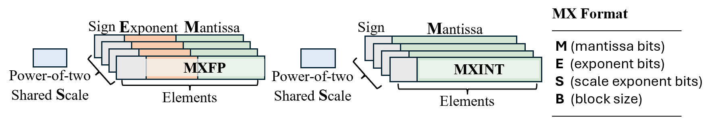

Tutorial 7: MX Post-Training Quantization with Mase#
This tutorial walks through the full MX post-training quantization flow
end to end against Mase’s chop APIs, using ``unsloth/Llama-3.2-1B``
as the demo model.
Contents#
The MX quantization config — block-scaled integer / floating-point formats expressed as a single TOML file consumed by
quantize_module_transform_pass.Quantization algorithm — RTN, then
[gptq]for weight quantization, then[rotation_search]for activation quantization.
Live-execution timings#
Each step runs in a single-GPU demo slot. The [gptq] and
[rotation_search] passes cache to disk, so reruns finish in seconds once
the first execution completes.
Prerequisites#
A CUDA 12.8 toolkit and an NVIDIA driver supporting it. Verify your CUDA version by running:
nvcc --version
Expected output (version line should read release 12.8):
nvcc: NVIDIA (R) Cuda compiler driver
Copyright (c) 2005-2025 NVIDIA Corporation
Built on Fri_Feb_21_20:23:50_PST_2025
Cuda compilation tools, release 12.8, V12.8.93
Build cuda_12.8.r12.8/compiler.35583870_0
The mx-ptq optional dependencies include fast-hadamard-transform (built
from source, ~2-3 min CUDA compile) and lm-eval.
Using uv:
uv sync --no-build-isolation --extra mx-ptq
Using pip:
pip install --no-build-isolation --extra-index-url https://download.pytorch.org/whl/cu128 ".[mx-ptq]"
Run the full tutorial script
(view source):
Using uv:
uv run python3 docs/source/modules/documentation/tutorials/tutorial_7_mx_ptq.py
Using Docker:
python3 docs/source/modules/documentation/tutorials/tutorial_7_mx_ptq.py
MX quantization refresher#
MX (Microscaling) formats store a tensor as low-precision elements grouped
into fixed-size blocks that share a single power-of-two scale
(Rouhani et al. 2023; OCP MX standard). Mase’s configurable MX quantizers
(chop.nn.quantizers.mxint, chop.nn.quantizers.mxfp) follow this
single-level scaling scheme.
{kind=link}

MX data formats: MXFP and MXINT, each block sharing one power-of-two scale. Figure adapted from the PLENA paper. MXFP elements carry sign + exponent + mantissa; MXINT elements carry sign + mantissa. Both share a single power-of-two scale per block, parameterised by the tunable tuple \((M, E, S, B)\) for MXFP and \((M, S, B)\) for MXINT.#
The format tuple#
We describe an MX data format as a tuple
where \(d\) is the element datatype (INT for MXINT, minifloat for
MXFP), \(b\) is the element bit-width, and \(B\) is the block size. So
\(\tau = (\texttt{INT},\, 4,\, 16)\) is MXINT4 with block size 16, and
\(\tau = (\texttt{minifloat},\, 4,\, 16)\) is MXFP4 with the same block
size. Every element in a block shares one scale \(s\) and one zero-point
\(z\); we use symmetric quantization throughout, so \(z = 0\).
Quantizing a block#
Given a high-precision tensor \(\mathbf{W}\) partitioned into blocks \(w \in \mathbb{R}^{B}\), the shared scale for each block is derived from its absmax against the format’s representable maximum:
Each element is then projected into the low-precision grid by scaling, round-to-nearest, and clipping to the representable range:
Dequantization reconstructs an approximation of the original block using the same shared scale:
What the TOML exposes#
Format |
Element |
Width knobs |
|---|---|---|
MXInt |
Signed integer |
|
MXFP |
Mini-float (exp + frac) |
|
Block size is set via weight_block_size / data_in_block_size. The
typical “MX4” setting used throughout this tutorial is 4-bit integer elements
with block size 32.
The PTQ Algorithm#
Llama-3.2-1B is quantized to W4 A4 KV4 (weights, activations, KV cache all MXInt4) three ways, with the cost measured at each step. Every config targets the same final precision; each adds one new optimization tool:
Config |
Adds |
Where the gain comes from |
|---|---|---|
A |
MXInt4 round-to-nearest |
Baseline — naive W4 A4 KV4 |
B |
|
Re-derives W4 weights so quantization error is output-aware |
C |
|
Per-matmul online Hadamard rotation on the matmul types with the largest outliers |
Perplexity is measured via lm-eval-harness’s ``wikitext`` task.
Setup#
Helpers used throughout this tutorial: load_quant_config parses a TOML
config into the pass_args dict that quantize_module_transform_pass
consumes; evaluate_perplexity wraps the lm-eval-harness WikiText
perplexity evaluation.
import tomllib
from copy import deepcopy
from pathlib import Path
import torch
from transformers import AutoModelForCausalLM, AutoTokenizer
from chop.passes.module.transforms import quantize_module_transform_pass
from lm_eval import simple_evaluate
from lm_eval.models.huggingface import HFLM
from lm_eval.utils import make_table
MODEL_NAME = "unsloth/Llama-3.2-1B"
OUTPUT_DIR = Path("tutorial_7_output")
OUTPUT_DIR.mkdir(exist_ok=True)
DEVICE = "cuda:0" if torch.cuda.is_available() else "cpu"
def load_quant_config(path):
with open(path, "rb") as f:
raw = tomllib.load(f)
by = raw.pop("by", "regex_name")
pass_args = {"by": by}
gptq = raw.pop("gptq", None)
if gptq is not None:
pass_args["gptq"] = deepcopy(gptq)
for key, value in raw.items():
pass_args[key] = {"config": deepcopy(value)}
return pass_args
def evaluate_perplexity(model, tokenizer, max_length=2048, batch_size=8):
"""Run lm-eval-harness wikitext task; return word_perplexity."""
lm = HFLM(pretrained=model, tokenizer=tokenizer,
max_length=max_length, batch_size=batch_size)
results = simple_evaluate(model=lm, tasks=["wikitext"],
batch_size=batch_size, limit=None)
print(make_table(results))
metrics = results["results"]["wikitext"]
for k, v in metrics.items():
if k.startswith("word_perplexity"):
return float(v)
raise KeyError(f"word_perplexity not found: {list(metrics)}")
def fresh_model(attn_implementation="eager"):
model = AutoModelForCausalLM.from_pretrained(
MODEL_NAME, torch_dtype=torch.float16,
attn_implementation=attn_implementation,
)
model.eval()
return model
tokenizer = AutoTokenizer.from_pretrained(MODEL_NAME, trust_remote_code=True)
fp16 baseline#
Reference perplexity before any quantization is applied.
model_fp16 = fresh_model(attn_implementation="sdpa").to(DEVICE)
ppl_fp16 = evaluate_perplexity(model_fp16, tokenizer)
print(f"fp16 ppl = {ppl_fp16:.4f}")
del model_fp16
if torch.cuda.is_available():
torch.cuda.empty_cache()
Note
Reference result: fp16 ppl = 12.8835 — the baseline word_perplexity
for fp16.
Config A — MXInt4 RTN (W4 A4 KV4)#
Every linear projection plus the KV cache gets MXInt4 with block size 32, no calibration. Two tiers of selectors:
self_attn$(with end-anchor) swapsLlamaAttention→LlamaAttentionMXIntso the in-attention KV cache becomes quantizable. The nested[qk_matmul],[av_matmul],[softmax],[rope]sub-blocks are bypassed.The config can be extended to cover those modules too — see the TOML reference.
self_attn.(q|k|v|o)_projandmlp.(gate|up|down)_projswap eachnn.Linear→LinearMXInt.
by = "regex_name"
# Attention block — swap LlamaAttention for the MXInt variant, quantize KV cache
['model\.layers\.\d+\.self_attn$']
name = "mxint"
['model\.layers\.\d+\.self_attn$'.qk_matmul]
bypass = true
['model\.layers\.\d+\.self_attn$'.av_matmul]
bypass = true
['model\.layers\.\d+\.self_attn$'.kv_cache]
data_in_block_size = 32
data_in_width = 4
['model\.layers\.\d+\.self_attn$'.softmax]
bypass = true
['model\.layers\.\d+\.self_attn$'.rope]
bypass = true
# Linear projections: W4 + A4
['model\.layers\.\d+\.self_attn\.(q|k|v|o)_proj']
name = "mxint"
weight_block_size = 32
weight_width = 4
data_in_block_size = 32
data_in_width = 4
['model\.layers\.\d+\.mlp\.(gate|up|down)_proj']
name = "mxint"
weight_block_size = 32
weight_width = 4
data_in_block_size = 32
data_in_width = 4
Apply the config in Python — three steps:
Load the model.
Parse the TOML into a
pass_argsdict.Transform the model in place — every matching
nn.Linearbecomes aLinearMXIntand everyLlamaAttentionbecomes aLlamaAttentionMXIntthat quantizes the KV cache on every call.
config_a_toml = OUTPUT_DIR / "config_a_rtn.toml"
config_a_toml.write_text(...) # TOML literal shown above
model_a = fresh_model(attn_implementation="eager")
pass_args_a = load_quant_config(config_a_toml)
model_a, _ = quantize_module_transform_pass(model_a, pass_args_a)
model_a.to(DEVICE)
ppl_a = evaluate_perplexity(model_a, tokenizer)
print(f"Config A ppl = {ppl_a:.4f}")
Note
Reference result: Config A ppl = 54.89 vs fp16 12.88. Quantization at
4 bits with no outlier mitigation accounts for most of the degradation;
Configs B and C reduce it.
Config B — add [gptq]#
GPTQ (Frantar et al., 2022) is a one-time
pre-pass: it walks the decoder layer by layer and rewrites each linear’s weight
in place using Hessian-based error compensation against a calibration set
(wikitext2 here). Mase’s [gptq] pass extends the original integer-only
formulation to MX data formats with block-wise clipping search.
The TOML keeps Config A’s selectors unchanged (attention swap + linear
selectors + KV cache config) and adds a top-level [gptq] block plus a
gptq = true flag on each linear selector so the linear classes consume the
calibrated weights instead of re-quantizing.
The checkpoint_dir enables auto-resume: re-running this cell only
recomputes layers that aren’t already on disk. First run takes a few minutes
for Llama-3.2-1B; subsequent runs finish in seconds.
by = "regex_name"
[gptq]
model_name = "unsloth/Llama-3.2-1B"
format = "mxint"
dataset = "wikitext2"
nsamples = 32
seqlen = 512
cali_batch_size = 8
quantile_search = true
clip_search_y = true
checkpoint_dir = "tutorial_7_output/checkpoints/config_b_gptq"
[gptq.weight_config]
weight_block_size = 32
weight_width = 4
# Same attention + linear selectors as Config A (KV cache stays quantized).
['model\.layers\.\d+\.self_attn$']
name = "mxint"
['model\.layers\.\d+\.self_attn$'.qk_matmul]
bypass = true
['model\.layers\.\d+\.self_attn$'.av_matmul]
bypass = true
['model\.layers\.\d+\.self_attn$'.kv_cache]
data_in_block_size = 32
data_in_width = 4
['model\.layers\.\d+\.self_attn$'.softmax]
bypass = true
['model\.layers\.\d+\.self_attn$'.rope]
bypass = true
['model\.layers\.\d+\.self_attn\.(q|k|v|o)_proj']
name = "mxint"
weight_block_size = 32
weight_width = 4
data_in_block_size = 32
data_in_width = 4
gptq = true
['model\.layers\.\d+\.mlp\.(gate|up|down)_proj']
name = "mxint"
weight_block_size = 32
weight_width = 4
data_in_block_size = 32
data_in_width = 4
gptq = true
model_b = fresh_model(attn_implementation="eager")
pass_args_b = load_quant_config(config_b_toml)
model_b, _ = quantize_module_transform_pass(model_b, pass_args_b)
model_b.to(DEVICE)
ppl_b = evaluate_perplexity(model_b, tokenizer)
print(f"Config B ppl = {ppl_b:.4f}")
Note
Reference result: Config B ppl = 31.0363 — roughly halves the gap
from Config A to fp16. We will target activation quantization error
next.
Config C — add [rotation_search]#
[rotation_search] adds online Hadamard rotation to a subset of the
matmuls, following the QuaRot approach
(Ashkboos et al., 2024) for outlier-free
low-bit inference. Unlike a static whole-model rotation, this pass keeps the
rotation inside each matmul’s forward — so reusing the GPTQ-cached weights
(which are unrotated) stays correct.
The greedy forward search walks the matmul types (q_proj, k_proj,
v_proj, o_proj, up_proj, gate_proj, down_proj, plus
kv_cache since it is quantized), tries enabling rotation on each one in
turn against a small wikitext2 calibration loader, commits the one with the
largest perplexity drop, and repeats. Winners are written to cache_path so
subsequent runs skip the search entirely.
The TOML adds a [rotation_search] block on top of Config B — same
selectors, same [gptq] block, same checkpoint_dir (so GPTQ auto-resumes
from Config B’s cache).
by = "regex_name"
[gptq]
model_name = "unsloth/Llama-3.2-1B"
format = "mxint"
dataset = "wikitext2"
nsamples = 32
seqlen = 512
cali_batch_size = 8
quantile_search = true
clip_search_y = true
checkpoint_dir = "tutorial_7_output/checkpoints/config_b_gptq"
[gptq.weight_config]
weight_block_size = 32
weight_width = 4
[rotation_search]
calib_nsamples = 32
calib_seqlen = 512
improvement_eps = 0.0
cache_path = "tutorial_7_output/checkpoints/config_c_rotsearch/rotation_decisions.json"
# Same attention + linear selectors as Config B.
['model\.layers\.\d+\.self_attn$']
name = "mxint"
['model\.layers\.\d+\.self_attn$'.qk_matmul]
bypass = true
['model\.layers\.\d+\.self_attn$'.av_matmul]
bypass = true
['model\.layers\.\d+\.self_attn$'.kv_cache]
data_in_block_size = 32
data_in_width = 4
['model\.layers\.\d+\.self_attn$'.softmax]
bypass = true
['model\.layers\.\d+\.self_attn$'.rope]
bypass = true
['model\.layers\.\d+\.self_attn\.(q|k|v|o)_proj']
name = "mxint"
weight_block_size = 32
weight_width = 4
data_in_block_size = 32
data_in_width = 4
gptq = true
['model\.layers\.\d+\.mlp\.(gate|up|down)_proj']
name = "mxint"
weight_block_size = 32
weight_width = 4
data_in_block_size = 32
data_in_width = 4
gptq = true
model_c = fresh_model(attn_implementation="eager").to(DEVICE)
pass_args_c = load_quant_config(config_c_toml)
model_c, _ = quantize_module_transform_pass(model_c, pass_args_c)
ppl_c = evaluate_perplexity(model_c, tokenizer)
print(f"Config C ppl = {ppl_c:.4f}")
Note
Reference result: Config C ppl = 20.4134 — lowest perplexity of the
three quantized configs. rotation_search selects the matmul types whose
activations have the largest outliers and applies online Hadamard rotation
to them.
Recap — the progressive cost#
All three configs target the same precision (W4 A4 KV4); the config is the
only thing that changes. Perplexity numbers come from lm-eval-harness’s
wikitext task (word_perplexity).
Config |
What it adds |
WikiText |
|---|---|---|
fp16 |
(reference) |
12.8835 |
A — RTN |
MXInt4 round-to-nearest |
54.8872 |
B — +GPTQ |
Hessian-aware weight calibration |
31.0363 |
C — +rotsearch |
Greedy per-matmul online Hadamard |
20.4134 |
Reference run: Llama-3.2-1B on a single GPU. Results may vary slightly across hardware.
Going further#
This tutorial covers Mase’s core MX-PTQ flow end to end. For a broader evaluation surface, see PLENA Software, which builds on Mase and adds:
A unified CLI driving the same TOML config across multiple eval surfaces —
eval_ppl,eval_lm(lm-eval-harness),eval_evalplus(HumanEval+),eval_phase_lm(different precision for prefill vs decode),eval_phase_bfcl(function calling),eval_dllm/eval_llada(diffusion LMs),eval_osworld(agentic tasks).Paper-table reproductions for Llama-2 / Llama-3 across model sizes and bit configurations.
Wrap-up#
This tutorial covered:
Three MX quantization configs targeting W4 A4 KV4, each adding one new tool: RTN →
[gptq]→[rotation_search].Applying them to Llama-3.2-1B via
quantize_module_transform_pass, with perplexity recovering at each step.How the same
pass_argsinterface handles plain RTN, weight calibration, and per-matmul rotation through a single TOML config.